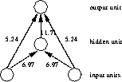
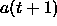
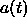
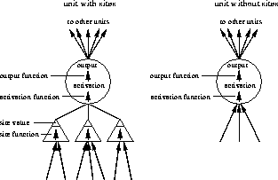

The following paragraph describes a generic model for those neural nets that can be generated by the SNNS simulator. The basic principles and the terminology used in dealing with the graphical interface are also briefly introduced. A more general and more detailed introduction to connectionism can, e.g., be found in [RM86]. For readers fluent in German, the most comprehensive and up to date book on neural network learning algorithms, simulation systems and neural hardware is probably [Zel94]
A network consists of units and directed,
weighted links (connections) between them. In analogy to
activation passing in biological neurons, each unit receives a net
input that is computed from the weighted outputs of prior units with
connections leading to this unit. Picture
and directed,
weighted links (connections) between them. In analogy to
activation passing in biological neurons, each unit receives a net
input that is computed from the weighted outputs of prior units with
connections leading to this unit. Picture  shows a
small network.
shows a
small network.

The actual information processing within the units is modeled in the
SNNS simulator with the activation function and the
output function. The activation function first computes the net input
of the unit from the weighted output values of prior units. It then
computes the new activation from this net input (and possibly its
previous activation). The output function takes this result to
generate the output of the unit. These functions can be arbitrary C functions linked to the simulator
kernel and may be different for each unit.
These functions can be arbitrary C functions linked to the simulator
kernel and may be different for each unit.
Our simulator uses a discrete clock. Time is not modeled explicitly (i.e. there is no propagation delay or explicit modeling of activation functions varying over time). Rather, the net executes in update steps, where

is the activation of a unit one step after
.
The SNNS simulator, just like the Rochester Connectionist Simulator
(RCS, [God87]), offers the use of sites as
additional network element. Sites are a simple model of the dendrites
of a neuron which allow a grouping and different treatment of the input
signals of a cell. Each site can have a different site function.
This selective treatment of incoming information allows more
powerful connectionist models. Figure  shows one
unit with sites and one without.
shows one
unit with sites and one without.

In the following all the various network elements are described in detail.